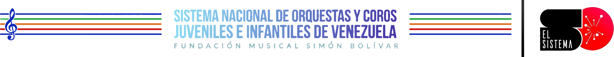

Sistema Nacional de Orquestas
Texto explicativo del carrusel…
“Música para iluminar, música para salvar...”
“La orquesta es el único espacio donde la solidaridad y el trabajo en equipo se convierten en arte.”
“La disciplina de la música nos enseña que la excelencia no es un acto, sino un hábito.”